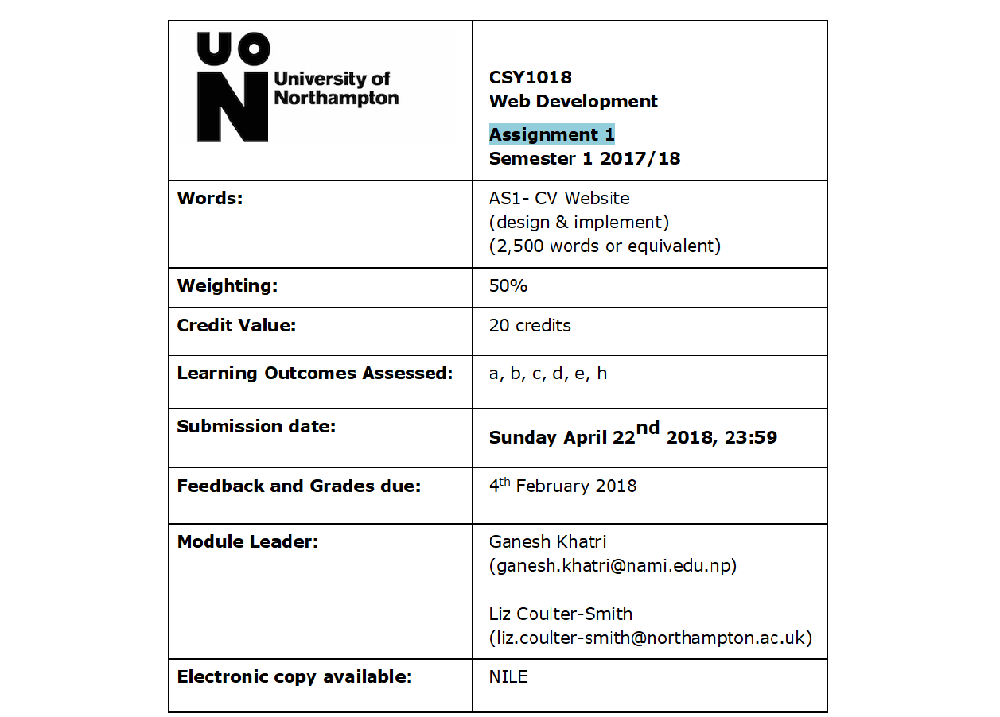

Six webpages were created using HTML and CSS technique to demonstrate web development technique as our first term assignment. HTML pages were made responsive to tablets and mobile phones too, keeping in mind that more people have shifted towards smartphones over PCs. To create responsive webpage, the task was fully based on our learning outcome from 12 week of lecture classes. Both basic and advanced CSS properties such as flex, transform etc. were used to create attractive design. Webpage designed were discussed among friends to ensure that the design is likable by all. Initially wireframe of webpage was created and then actual design was made, based on the wireframe created earlier. After completed creation of webpage, it was validated using HTML validator online, whose evidence are shown in the report. Although, no Javascript was taught in this term, form which was created in page Contact was validated using Javascript.Map was embedded in our webpage using google maps. Google map provided a link of the map required, and the same HTMl code was cited in webpage to embed map in webpage-Contact.
Before starting to create website, wireframe was created in order to visualize how website would look like when it is completed. Wireframe was done with hand sing paper and pencil. Wireframe for all six website created are showing below.


Web development was taught as part of our syllabus in term one of L4 Computing. Throughout our course we could learn to create professional webpages, with attractive design. Webpage created were not only limited to desktop computer but they were compactible to smart phones such as tablets, cell phones etc. content inside webpage was divided into different parts using HTML tags. Navigation bar could be created using nav tags. And linking CSS file in these HTML pages make our webpage attractive and responsive at same time. We learned to make our webpage responsive by using meta tag in our Markup language. Different CSS properties were used for same HTML tags to ensure they could be responsive in smart phones and tablets. CSS animation and transition were taught in week 7 and eight. After learning about both animation and transition, we could add any 2D and 3d transition in our webpage to make it look attractive.
Form was also created in HTML webpage. Demonstration of skill of making Form in webpage using HTML is shown in this assignment as well. Although no detail Javascript could be learned in this term, we were introduced to basic concept of Javascript, which helps us in validation of our form created in webpage-Contact.
In a nutshell, my experience in term one was very productive. Personally, I had no idea on creating any website using HTML, let alone CSS properties. After reading 12 week of lecture and tutorial in web development, I am now able to create satisfactory design for any webpage. Webpages were responsive as well, which is itself a huge achievement.
After whole HTML and CSS code was done, webpage had to be validated to check how code in webpage are written. So, after uploading whole webpage in Github, webpage was made live and using its live URL, webpage was passed through W3school HTML validator in order to validate webpages designed. CSS code was also validate inn W3school CSS validator. As expected, webpage was not free from errors, there were significant amount of error. Some of the error were corrected and whole webpage was again validated for both CSS and HTML files. Some error were still detected, these error were due to limitation in knowledge in HTML and CSS property. Screenshot of both HTML validation and CSS validation of this webpage are shown below.